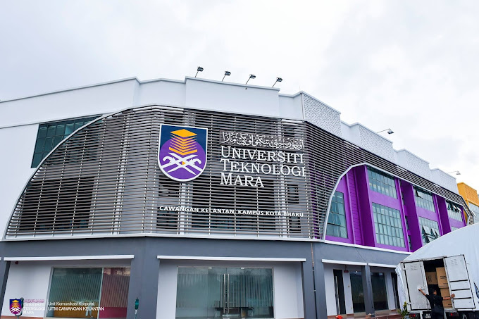

MY EDUCATION

My studies at Universiti Teknologi MARA Kelantan Campus in Kota Bharu are now in my second year.
I'm a Business Economics major in my Bachelor of Business Administration (Hons) programme. Even though I have to be away from my family,
I believe that by completing my degree-level studies here, I will ensure a successful future for myself and, in turn, provide my family happiness in the future.
I've learnt a lot of new things as I pursue my studies here. Furthermore, Kelantan has a wide variety of tasty meals that spark my interest in trying more local dishes.
But in order to become a dean and graduate on time, I must concentrate on studying hard and keep focus.
This is the list of my educational background:
List Of My Educational Background
No.
Institution
Years
Results
1
UiTM Kelantan Campus Kota Bharu
2021 - present
4.00 CGPA
2
Sijil Tinggi Pelajaran Malaysia
2019 - 2021
3.58 CGPA
3
Sijil Pelajaran Malaysia
2017 - 2018
7A 1B
4
Pentaksiran Tingkatan 3
2014 - 2016
8A 1B
This is the list of my educational background:
| List Of My Educational Background | |||
| No. | Institution | Years | Results |
|---|---|---|---|
| 1 | UiTM Kelantan Campus Kota Bharu | 2021 - present | 4.00 CGPA |
| 2 | Sijil Tinggi Pelajaran Malaysia | 2019 - 2021 | 3.58 CGPA |
| 3 | Sijil Pelajaran Malaysia | 2017 - 2018 | 7A 1B |
| 4 | Pentaksiran Tingkatan 3 | 2014 - 2016 | 8A 1B |